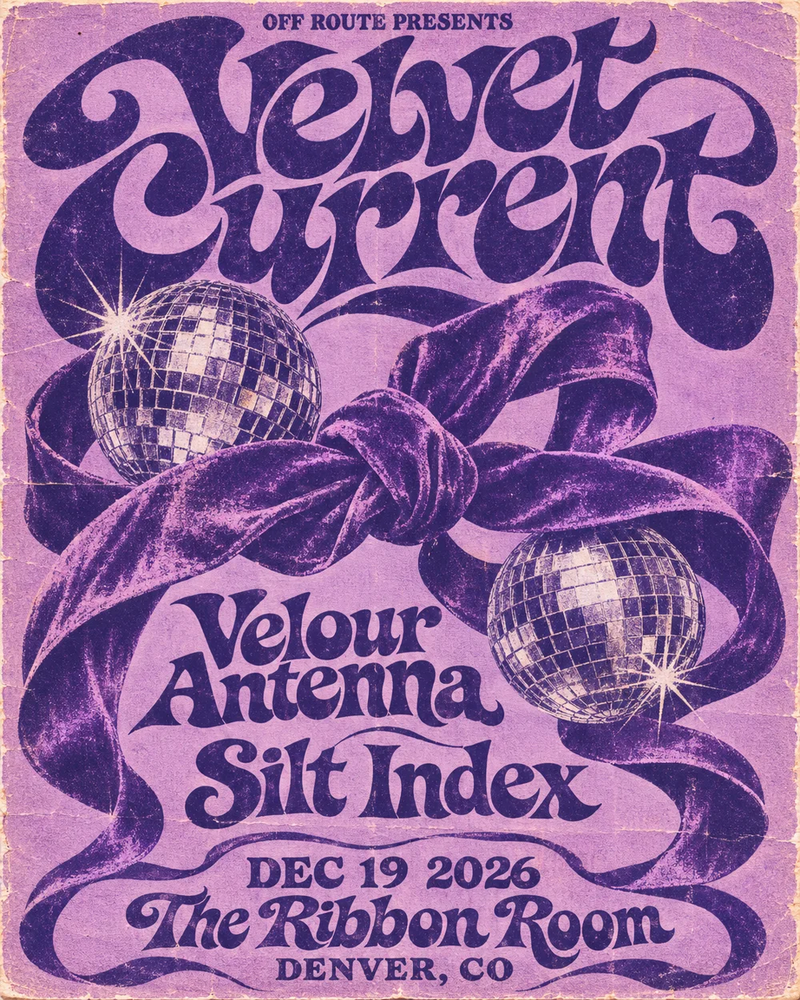
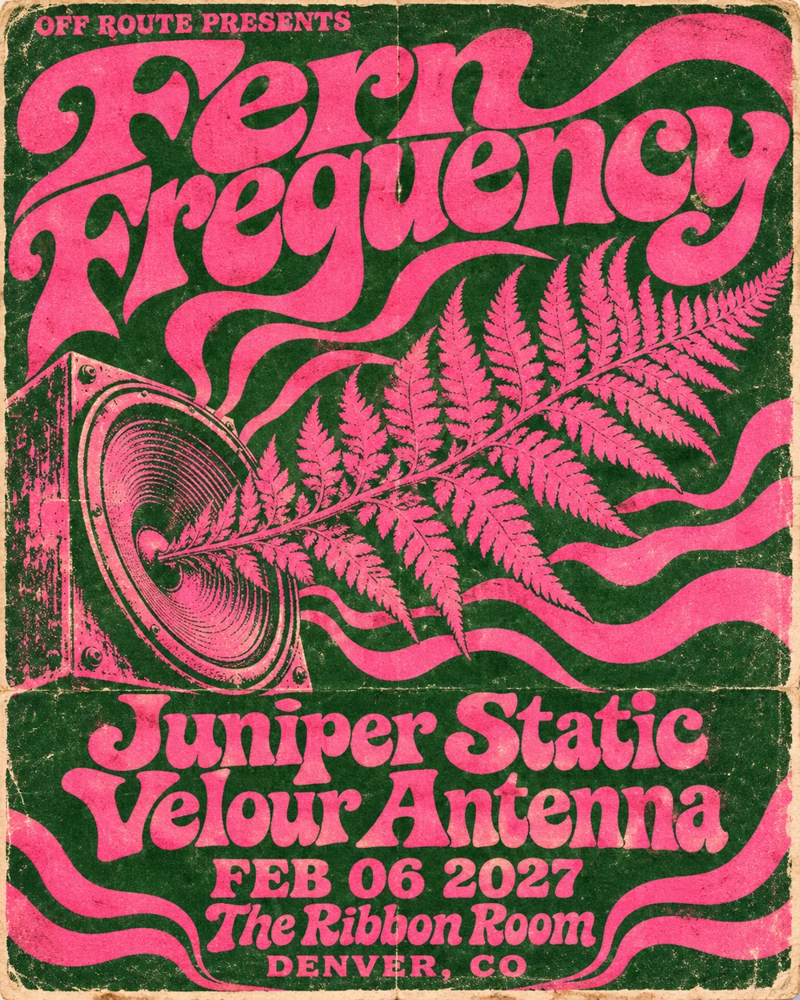

Velvet Current
The Ribbon Room · Denver, CO

Artist profile / Fictional roster
Live vocal house

Biography
Velour Antenna builds a chorus one breath at a time. A close-miked phrase goes into the sampler, returns as a chord, then slips underneath the next line. Their live set leaves room for the imperfections of a voice in a small room, even when the kick drum is shaking the walls.

The Ribbon Room · Denver, CO

The Ribbon Room · Denver, CO